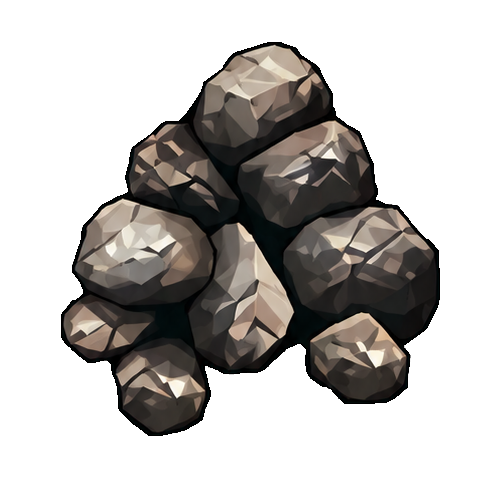
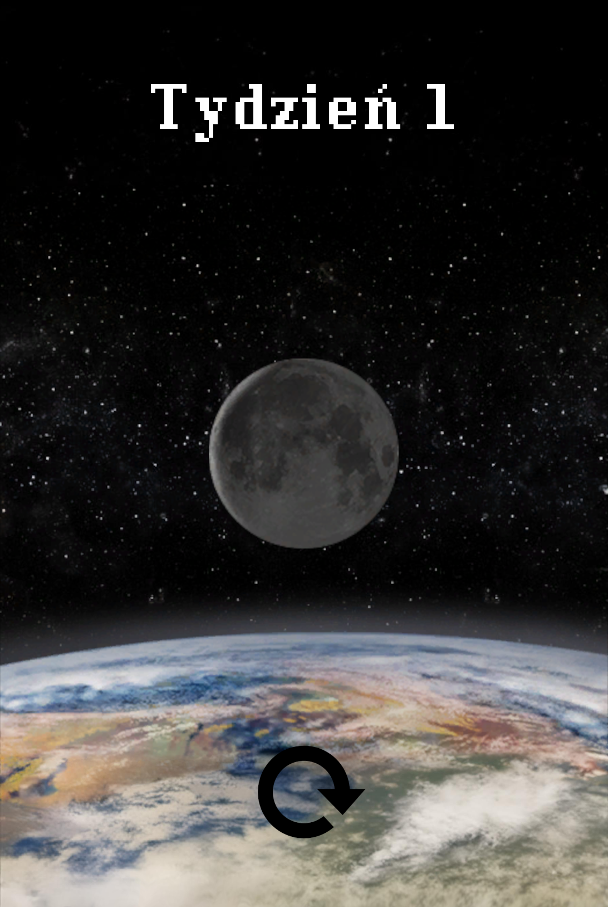

Wznieś swoje miasto. Rozwijaj handel, naukę i armię. Przez trzy tygodnie zbuduj potęgę Erathii.
3tygodnie rozwoju✥6tur w tygodniu✥1karta na turę
Poznaj przygotowanie, przebieg tury i zasady punktowania.
I
Gra online
Utwórz pokój i wyślij znajomym link zaproszenia. Gospodarz prowadzi synchronizację partii — musi mieć otwartą stronę i połączenie z internetem. Po zamknięciu strony gra poczeka na jego powrót. Gra jest przeznaczona do wspólnej zabawy w zaufanym gronie.
II
Przygotowanie
Każdy gracz otrzymuje losowe miasto, 3 monety i 7 kart pierwszego tygodnia. Gra obejmuje trzy tygodnie, po sześć tur każdy. Miasto stale produkuje swój surowiec bazowy. Dobierz karty z oznaczeniem liczby graczy nie większym niż liczba uczestników. W trzecim tygodniu do talii dochodzą losowe gildie, w liczbie równej liczbie graczy plus dwa.
7kart na początek tygodnia
3monety na start
1miasto dla każdego gracza
Przykładowa plansza Zamku. U góry znajduje się surowiec bazowy, a na dole koszty i nagrody trzech etapów.
III
Jedna karta, trzy możliwości
Wybuduj budynek. Zapłać koszt i dodaj kartę do swojego miasta. Nie możesz zbudować drugi raz budynku o tej samej nazwie. Symbol łańcucha pozwala budować za darmo, jeśli masz odpowiedni wcześniejszy budynek.
Wybuduj etap miasta. Poświęć dowolną kartę z ręki, zapłać koszt najbliższego etapu i odbierz jego efekt. Etapy buduje się po kolei.
Odrzuć kartę. Otrzymasz 3 monety.
✥
Mauzoleum · pierwszy tydzień
PRZYKŁAD · JEDNA KARTA, JEDNA DECYZJA
Co zrobisz z Mauzoleum?
Budowa: zapewnij 1 rudę. Karta trafia do miasta i zwiększa siłę armii o 1.
Etap Zamku: zamiast budynku poświęć tę kartę zakrytą i zapewnij 2 siarki. Pierwszy etap daje 3 punkty. Efekt Mauzoleum nie działa.
Odrzucenie: karta trafia na stos odrzuconych, a ty otrzymujesz 3 monety.
IV
Produkcja i handel
Surowce nie są zużywane: możesz korzystać z ich produkcji w każdej turze. Na karcie z wyborem produkujesz jedną ze wskazanych możliwości. Brakujące surowce można kupować od bezpośrednich sąsiadów za 2 monety za sztukę; karty handlowe obniżają cenę. Możesz kupować produkcję bazową miasta i brązowych oraz szarych kart sąsiada. Nie kupujesz produkcji jego żółtych kart ani etapów miasta.
Przy kilku możliwościach płatności wybierasz, ile monet otrzyma lewy i prawy sąsiad. Płatność musi być dostępna z monet posiadanych na początku tury.
✥
PRZYKŁAD · ZAKUP BRAKUJĄCEJ RUDY

Potrzebujesz 2 rudy
Masz własną produkcję 1 rudy. Sąsiad produkuje drugą, więc kupujesz od niego 1 rudę. Twoja produkcja pozostaje dostępna w następnych turach.
twoja produkcja+od sąsiada=2 rudy
Bez zniżki płacisz sąsiadowi 2 monety za brakującą rudę. Z odpowiednią kartą handlową płacisz 1 monetę. Jeśli karta wymaga też monet, tę część kosztu oddajesz do banku.
Zakup surowca nie odbiera go sąsiadowi. Sąsiad nadal może korzystać ze swojej produkcji.
V
Przekazywanie kart
Wszyscy wybierają jednocześnie. Gdy każdy potwierdzi ruch, karty są rozpatrywane i pozostała ręka trafia do sąsiada. W pierwszym i trzecim tygodniu ręce krążą w jednym kierunku, w drugim — w przeciwnym. Po szóstej turze ostatnia karta jest odrzucana.

Tydzień I · 7 kart→
Wybierz 1 kartę
Potwierdź swój ruch i poczekaj na pozostałych graczy.
→
Przekaż 6 kart
Otrzymasz pozostałe karty od drugiego sąsiada i znów wybierzesz jedną.
W drugiej turze wybierasz spośród 6 kart, w trzeciej spośród 5. W szóstej turze wybierasz z 2 kart; ostatnia zostaje odrzucona.
VI
Wojna i nauka
Na koniec każdego tygodnia porównaj siłę armii z każdym sąsiadem. Zwycięstwo daje 1, 3 lub 5 punktów zależnie od tygodnia, porażka −1, remis 0. Każdy rodzaj symbolu nauki daje kwadrat ich liczby punktów; każdy komplet trzech różnych symboli daje dodatkowo 7 punktów. Symbole z wyborem są dobierane tak, aby zmaksymalizować końcowy wynik.
Drzewo wiedzy daje jeden symbol nauki.
PRZYKŁAD · WOJNA W DRUGIM TYGODNIU
Twoja siła: 3
Lewy sąsiad ma siłę 2: wygrywasz i otrzymujesz +3 punkty. Prawy sąsiad ma siłę 4: przegrywasz i otrzymujesz −1 punkt.
Łączny wynik tej wojny: +2 punkty.
✥
PRZYKŁAD · PUNKTY ZA NAUKĘ
Dwa takie same symbole i po jednym z pozostałych
2² + 1² + 1² = 6 punktów za symbole. Jeden komplet trzech różnych daje dodatkowe 7. Razem: 13 punkty.
VII
Zwycięstwo
Po trzecim tygodniu sumuje się punkty za budynki, etapy miasta, naukę, wojnę, premie i monety (1 punkt za każde pełne 3 monety). Remis rozstrzyga liczba monet. Przy równej liczbie monet gracze dzielą zwycięstwo.
Budynki i miasto
Przykład: 18 punktów z budynków i 10 z etapów miasta.
Nauka i wojna
13 punkty za naukę oraz 2 punkty z rozstrzygniętych konfliktów.
Monety
8 monet daje 2 punkty. Pozostałe 2 monety nie tworzą pełnej trójki.
Przykładowy wynik bez innych premii: 18 + 10 + 13 + 2 + 2 = 45 punktów.
VIII
Stan kolekcji
Talia jest kompletna dla 3–7 graczy, a do losowania dostępne są wszystkie miasta.
IX
Zdolności miast
Drugi etap Bastionu pozwala jednorazowo wybudować za darmo kartę ze stosu odrzuconych, po rozpatrzeniu bieżącej tury. Karty poświęcone na etapy miasta nie należą do tego stosu. Drugi etap Lochu sprawia, że pierwszy budynek każdego koloru, którego jeszcze nie masz w swoim mieście, jest darmowy. Zdolność działa od kolejnej tury po zbudowaniu etapu.
Bastion · drugi etap pozwala wybrać darmowy budynek ze stosu odrzuconych.
Przykład Bastionu: budujesz drugi etap, a po rozpatrzeniu ruchów wybierasz dostępną kartę ze stosu odrzuconych. Budujesz ją za darmo. Karta poświęcona pod etap pozostaje zakryta pod miastem.
Loch · drugi etap zapewnia darmowy pierwszy budynek każdego nieposiadanego koloru.
Przykład Lochu: masz już brązowe i czerwone budynki. Po wybudowaniu drugiego etapu od następnej tury możesz wznieść swój pierwszy zielony budynek za darmo. Następny zielony opłacasz normalnie. Etap nie daje dodatkowej akcji.
X
Łańcuchy darmowej budowy
Symbol powiązania na wybudowanej karcie pozwala później wznieść kartę z tym samym symbolem w koszcie. Wtedy pomijasz cały koszt budowy. Nadal poświęcasz na to swój wybór karty w turze.
Bractwo miecza
→
Masz już Bractwo miecza, więc możesz wybudować Kolos bez płacenia kosztu.
Kolos
Nie możesz mieć dwóch budynków o tej samej nazwie, nawet gdy kolejny byłby darmowy. Łańcuch nie opłaca etapu miasta.
XI
Jak czytać efekty kart
Efekt widzisz u góry karty, a koszt po lewej. Brązowe i szare karty rozwijają produkcję, niebieskie dają punkty, czerwone armię, zielone naukę, żółte handel i dochody, a fioletowe premie końcowe.
Strzałki na efekcie wskazują, czy liczysz swoje miasto, obu sąsiadów, czy wszystkie te miasta. Liczba przy symbolu określa nagrodę za każdy pasujący element.
Alchemiczne złoża
Produkcja do wyboru
W każdej turze wybierz jedną z możliwości produkcji: 1 × rtęć albo 1 × siarka.
W jednej turze wykorzystujesz jedną z pokazanych możliwości. W następnej możesz wybrać inaczej. Ukośnik oznacza „albo”, a symbole bez ukośnika sumują się.
Składowisko drewna
Stała produkcja
W każdej turze produkuje: 1 × drewno. Surowce nie są zużywane podczas budowy.
Mauzoleum
Siła militarna
Zwiększa siłę armii o 1. Na koniec tygodnia porównujesz siłę z każdym sąsiadem.
Bractwo miecza
Punkty zwycięstwa
Na koniec gry daje 3 punkty zwycięstwa.
Drzewo wiedzy
Symbol nauki
Zapewnia symbol nauki: inteligencja. Każdy rodzaj daje kwadrat liczby symboli punktów, a komplet trzech różnych symboli dodatkowo 7 punktów.
Karczma
Natychmiastowe monety
Natychmiast otrzymujesz 5 monet.
Handel wschodni
Zniżka w handlu
Kupujesz wskazane surowce (drewno, rtęć, ruda, siarka) za 1 monetę za sztukę od prawego sąsiada.
Młyn wodny
Monety za karty
Natychmiast otrzymujesz 1 monetę za każdą kartę surowcową u siebie i obu sąsiadów.
Jeśli we wskazanych miastach są łącznie 4 pasujące karty, otrzymujesz 4 monety. Liczysz stan podczas uruchomienia efektu; późniejsze karty nie dopłacają monet.
Całun ciemności
Monety i punkty za karty
Za każdą kartę wojskową w swoim mieście: 3 monety natychmiast i 1 punkt na koniec gry.
Przy 4 pasujących kartach otrzymujesz teraz 12 monet. Jeśli na koniec gry jest ich 6, otrzymasz 6 punktów.
Smocza jaskinia
Monety i punkty za etapy
Za każdy wybudowany etap miasta w swoim mieście: 3 monety natychmiast i 1 punkt na koniec gry.
Przy 2 pasujących etapach dostajesz teraz 6 monet. Jeśli na koniec są 3 etapy, dostaniesz 3 punkty.
Magazyn zasobów
Punkty za karty
Na koniec gry otrzymujesz 1 punkt za każdą kartę surowcową u obu sąsiadów.
Jeśli na koniec gry we wskazanych miastach są 4 pasujące karty, otrzymujesz 4 punkty.
Biblioteka oświecenia
Nauka do wyboru
Zapewnia jeden wybrany symbol nauki. W końcowym rozliczeniu wybór maksymalizuje liczbę punktów.
Jeden taki efekt daje jeden symbol. Przy układzie 2 / 1 / 0 najlepiej uzupełnić brakujący rodzaj: układ 2 / 1 / 1 daje 13 punkty zamiast 10 za układ 3 / 1 / 0.
Biblioteka
Punkty za karty
Na koniec gry otrzymujesz 1 punkt za każdą kartę brązową, szarą lub fioletową w swoim mieście.
Jeśli na koniec gry we wskazanych miastach są 4 pasujące karty, otrzymujesz 4 punkty.
todo2
Punkty za rozwój miast
Na koniec gry otrzymujesz 1 punkt za każdy wybudowany etap miasta u siebie i obu sąsiadów.
Gdy warunek symbolu spełniają 2 wybudowane etapy, premia wynosi 2 punkty.
todo3
Punkty za rozwój miast
Na koniec gry otrzymujesz 7 punktów za każde ukończone miasto w swoim mieście.
Jeśli ukończysz wszystkie etapy swojego miasta, otrzymasz 7 punktów. Nieukończone miasto nie daje tej premii.